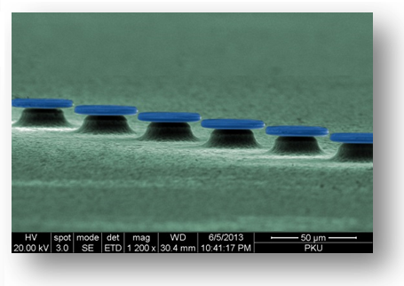
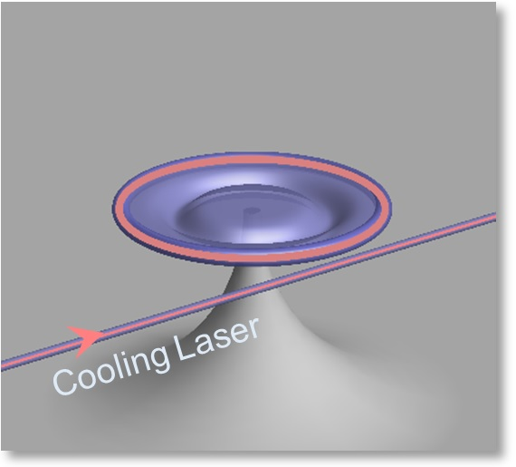
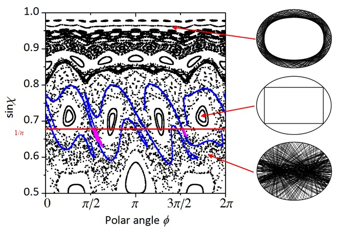
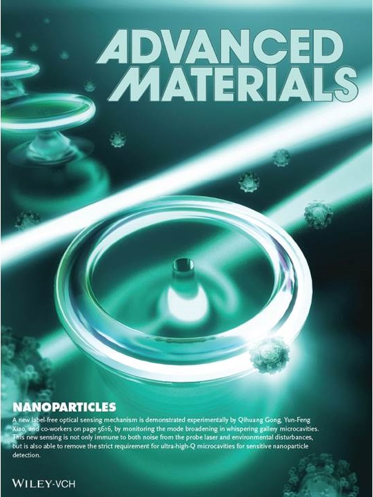

|  | The research in our group centers around the optical whispering gallery modes (WGMs) inside the microtoroid cavities. Whispering gallery waves were ever studied by Lord Rayleigh in the whispering gallery of St Paul's Cathedral in London, where sound travels around the circumference clinging to the walls. The same phenomenon can be observed in the Echo Wall of the Temple of Heaven in Beijing (picture on the left). Whispering gallery sound waves have their counterpart in optics, as light can propagate around the circumference of dielectric microdisks, microspheres, or microtoroids. The microtoroids fabricated on a chip by our group are shown on the left. WGMs possess ultra-high quality factors and very small mode volumes, which provide an excellent platform for greatly enhanced light-matter interactions. |
|  | Cavity quantum electrodynamics (cavity QED) studies the interaction between the quantized light field and single atoms or other dipoles confined in a cavity; while cavity optomechanics investigates the interaction between cavity photons and microscopic mechanical oscillators. These two types of interactions have many similarities and can both give rise to interesting phenomena which are of importance in fundamental physics and quantum information. Current projects include:
|
|  | Optical microresonators with smoothly deformed boundaries have been discussed widely to test classical and quantum chaos recently. In deformed microresonators, dynamic tunneling from the high-Q regular modes to the chaotic sea plays the key role in the directional emission, which provides a convenient way to excite cavity modes and collect their emission via free space. Our interests include (i) design and realiztion of ultrahigh-Q deformed microcavities on a silicon chip, (ii) new interesting phenomena, and (iii) novel applications using deformed microcavities. |
|  | Label-free microcavity/nanofiber sensors have attracted much attention because they are critical to applications in medicine, environment, and security. Benifitting from high-Q factors and very small volumes of optical whispering gallery modes, single-nanoparticle detection can be achieved by monitoring the frequency shift, mode splitting, or linewidth broadening. In our experiment, we also obtain single-virus response. |